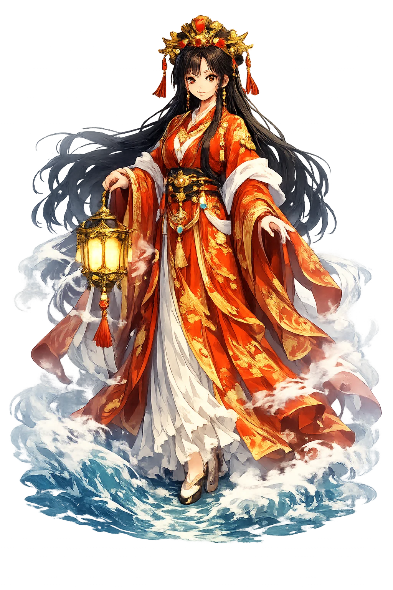
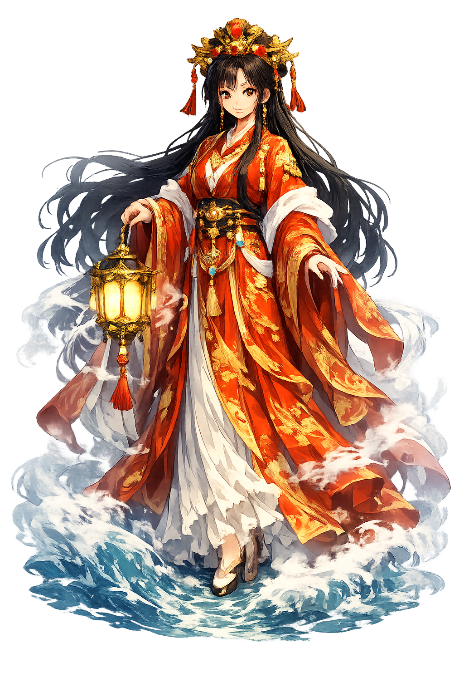

The Authentic Orthography
Sea, Protection, Seafaring · Sea, Protection, Seafaring · Mother ancestor

Unicode restoration and ASCII comparison
媽祖
The name in its original Chinese form. Māzǔ (媽祖) is attested in the source tradition — “Mother ancestor”. Its macron-length vowels carry the full phonetic and orthographic weight of the source tradition.
mazu
Reduced to plain mazu, the name loses everything that made it specific: macron-length vowels. What remains is an ASCII string that machines can parse but that no longer speaks with its original voice.
Māzǔ
The Unicode restoration recovers what ASCII flattened. Māzǔ restores macron-length vowels, returning the name to its original written dignity. The domain encodes to Punycode, but the browser displays the truth.
Māzǔ.com → xn--mz-dla95f.com
The non-ASCII characters in Māzǔ are encoded while the ASCII remains visible. To the DNS, it is Punycode. To humanity, it is Māzǔ.
How Māzǔ is preserved in writing
A bespoke provenance study for Māzǔ is being prepared by the PUNICODEX scholarly team.
Contribute scholarly provenance →How Māzǔ was spoken
Sailors, Storms, and the Red Lantern
Māzǔ is the most-worshipped sea goddess on earth: the fisherman's daughter who became the guardian of everyone who works the water, whose temples line every coast of the Chinese world, and whose red lanterns guide sailors home through a thousand years of storms.
The goddess of everyone who goes to sea — the busiest answering voice on the water.
Her signal in the storm — the light sailors pray to see.
Qiānlǐyǎn and Shùnfēng'ěr — her thousand-mile eyes and wind-sharp ears.
Her island home off Fujian — the Nazareth of the sea-faith.
Stories of Māzǔ
Māzǔ's myth is a life, not a legend: the historical Lín Mòniáng of 10th-century Meizhou, whose silence, visions, and early death became the sea's own religion.
Lín Mòniáng was born on Meizhou island in 960 CE, and tradition says she did not cry at birth — hence "Silent Maiden." She learned to read the weather on her father's fishing boat, stood on the shore watching for lost sails, and was seen in dreams guiding drowning sailors home. Dead by twenty-eight, she rose, the fishermen said, straight to the sky on a cloud of incense — and the sea was never without her again.
The dynasties out-titled each other: the Song made her Consort of Heaven, the Yuan made her Princess, the Ming made her Holy Mother, the Qing made her Tiānhòu — Empress of Heaven. The historical woman is buried in the titles: the fishing daughter became, by twelve centuries of gratitude, the highest-ranked goddess of the Chinese sea, outranking every god the bureaucracy could promote her past.
Her two attendants are the myth of vigilance itself: Qiānlǐyǎn ("thousand-mile eye") and Shùnfēng'ěr ("with-the-wind ear"), the demon-generals she tamed to watch and listen for sailors in distress. Their horned, fierce statues flank her in every temple — the goddess's instruments: nothing that happens on her sea goes unseen or unheard.
Her living myth is the Dajia Māzú pilgrimage: each year her statue walks 340 kilometers around Taiwan for nine days, and a million people walk with it — touch the palanquin, kneel as it passes, weep when it returns home. The largest annual religious procession in the Chinese world is not to a cathedral but after a fisherman's daughter, walking the roads she still guards.
Māzǔ is the goddess of being watched for. Not of the sea — of the people on it: the daughter who never stopped standing on the shore. She asks the question every sailor, parent, and lighthouse-keeper knows: who is watching the water for you — and for whom, tonight, are you the lantern?
Enter Extended Lore